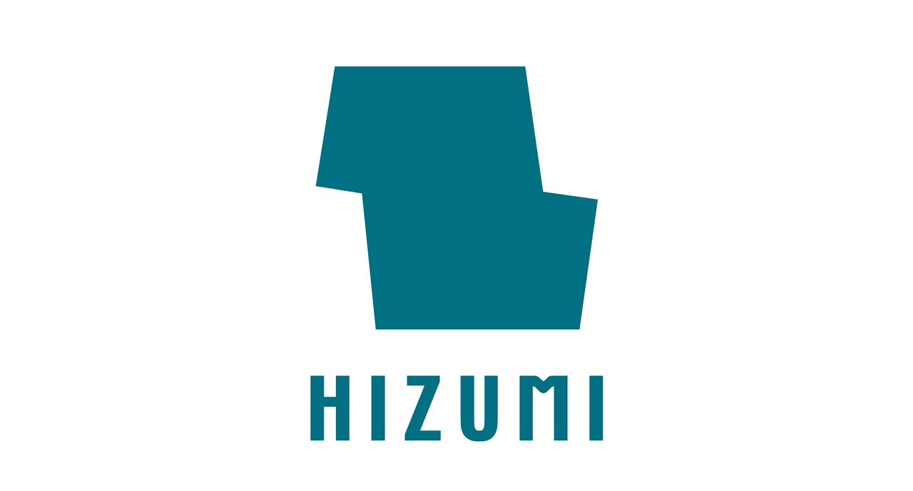

SDGsが執拗に強調されている昨今の世の中では、服の大量消費はタブーとされ、環境に配慮された単一のシンプルなデザインの服を長く着る、没個性的な"ミニマリスト"の思考がソーシャルグッドとされる風潮が生まれつつある。
しかしながら、私たちの中には毎シーズン新しい服を身に纏い、自分なりのファッションを探究したい欲求を持った人たちが存在する。SDGsへの過度な意識がファッション本来の自由さであったり、モノづくりにおける試行錯誤の楽しさを奪ってしまうことは無粋な話である。
HIZUMIはそのようなファッション業界における"環境への配慮"という制約をデジタルのAIとアナログの縫製技術の融合によってクリエイティブに解決をする。
HIZUMIにおけるファッションは掛け算である。手持ちの服はいつかは飽きてしまうが、購入時には惹かれた理由があり、所有者の潜在的な好きが隠れている。カタチを変えたり他の生地や服と掛け合わせアップサイクルをすることで、服は新たな価値として蘇る。しかし、従来のアップサイクルはファッションデザインや縫製のスキルを持つ人だけが行う"閉じた"行為であった。
もし、全ての人がアップサイクルを行えるようになったら、ファッション消費における閉塞感は壊れ、全ての人が個性的で自分らしいファッションを追求することができるようになるだろう。地球への負荷を気にせずにだ。
HIZUMIはそんな新しい世界を作り出すプラットフォームである。